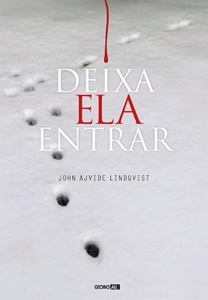
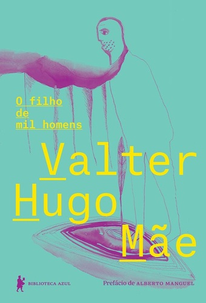
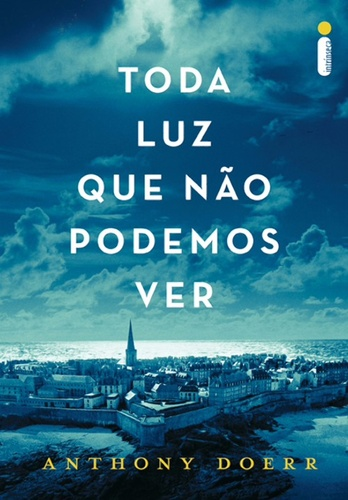

Blá, blá, blá, blá, blá, blá, blá, blá, blá, blá, blá, blá, blá, blá
See for yourself|  |
Deixa ela entrarOskar, um garoto de doze anos, vive com a mãe no subúrbio de Estocolmo, na década de 1980. Solitário e alvo de bullying na escola, passa o tempo lendo e colecionando notícias sobre serial killers e planejando se vingar de seus perseguidores. |
|  |
O filho de mil homensA solidão, para Crisóstomo, é um filho que não se tem. Aos quarenta anos, o pescador decide buscar o que lhe falta. Vai encontrar no jovem Camilo, órfão de uma anã, a chance de preencher a metade vazia, e em Isaura, enjeitada por não ser virgem, a possibilidade de ser mais do que completo. |
|  |
Toda luz que não podemos verNa ocupação nazista em Paris, pai e filha fogem para a cidade de Saint-Malo e levam consigo o que talvez seja o mais valioso tesouro do museu. Em uma região de minas na Alemanha, Werner cresce com a irmã mais nova, encantado pelo rádio que certo dia encontram em uma pilha de lixo. |